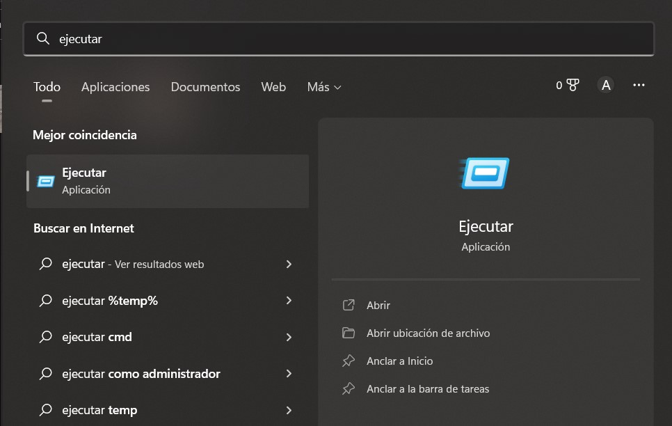
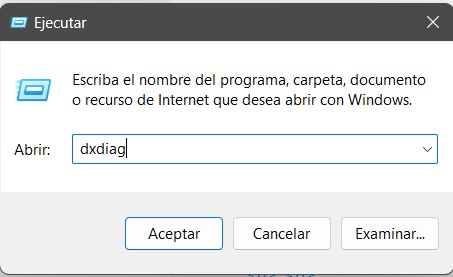
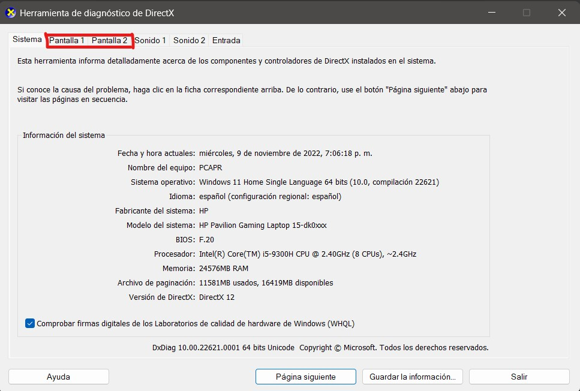
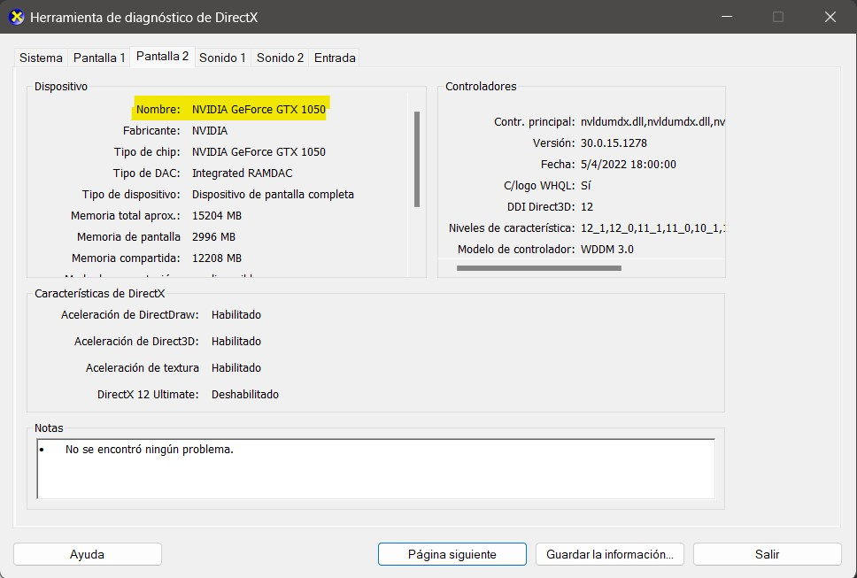
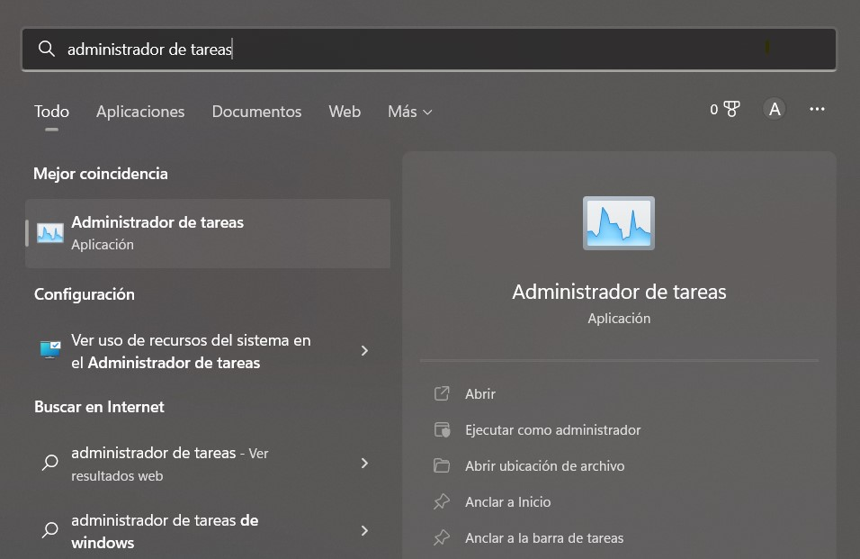
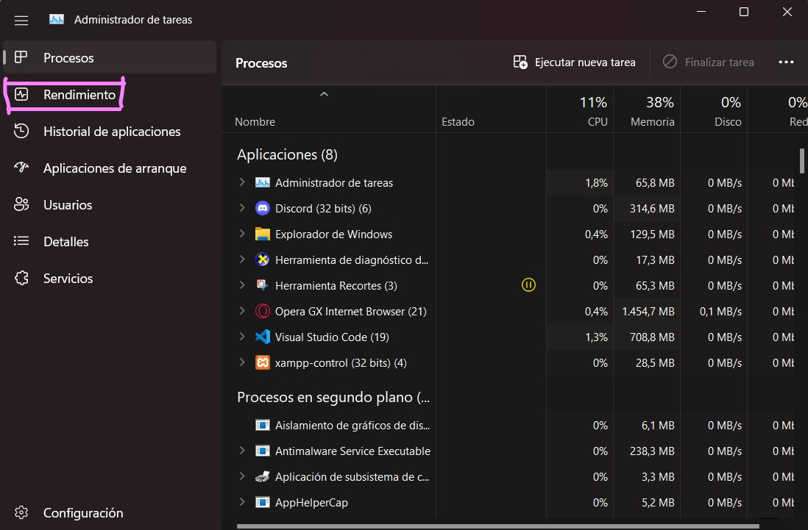
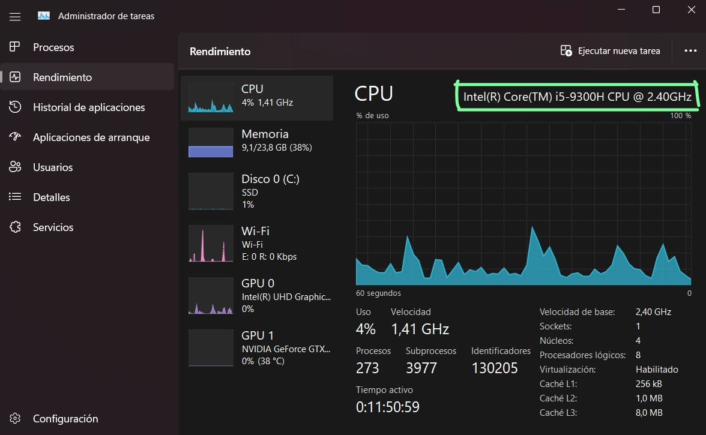
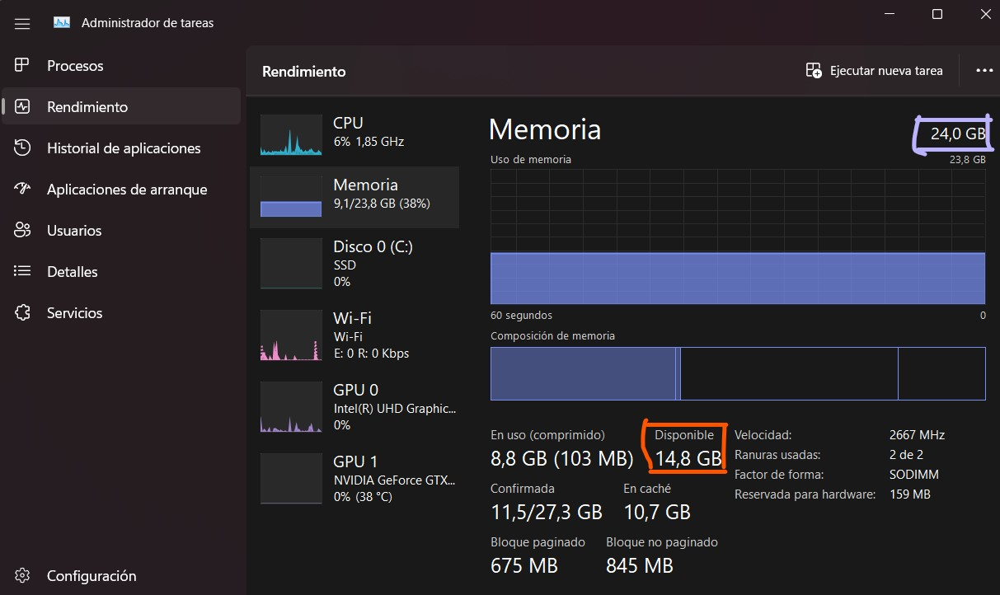

Tarjeta grafica
1.Haz clic en Inicio y buscas "ejecutar"

2.En el cuadro Abrir, escribe "dxdiag" (sin comillas) y, a continuación, haz clic en Aceptar.

3.Se abrirá la herramienta de diagnóstico de DirectX. Haz clic en la pestaña Pantalla.

4.En la pestaña Pantalla, la información sobre tu tarjeta gráfica se muestra en la sección Dispositivo. Puedes ver el nombre de tu tarjeta, así como cuánta memoria de vídeo tiene.

Procesador y RAM disponible
1.Haz clic en Inicio y buscas "administrador de tareas"

2.Abrir la pestaña rendimiento"

3.En la pestaña CPU aparecera el procesador al lado derecho superior"

4.En la pestaña Memoria aparecera la cantidad total de RAM que tienes al lado supeior derecho y tambien aparecera la RAM disponible"
